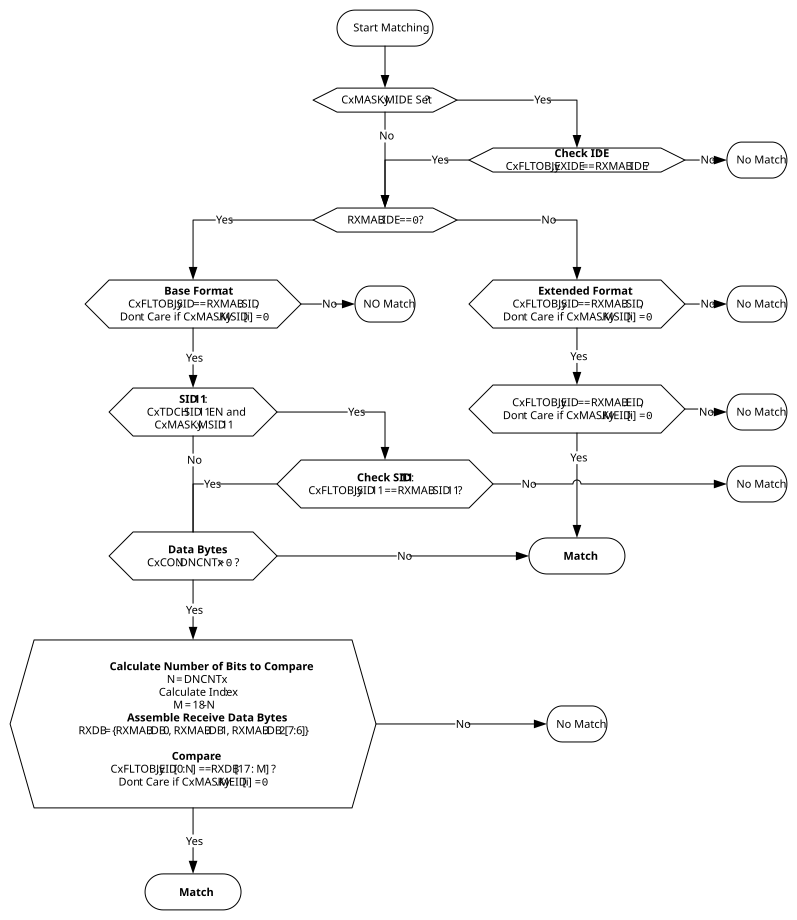

The mask object is used to ignore selected bits of the received identifier.
The masked bits (mask bits with a value of ‘0’) of the RXMAB will not
be compared with the bits in the filter object. For example, to receive all messages
with Identifiers 0, 1, 2 and 3, it is required to mask the lower two bits of the
identifier by clearing the corresponding bits of the mask object.
